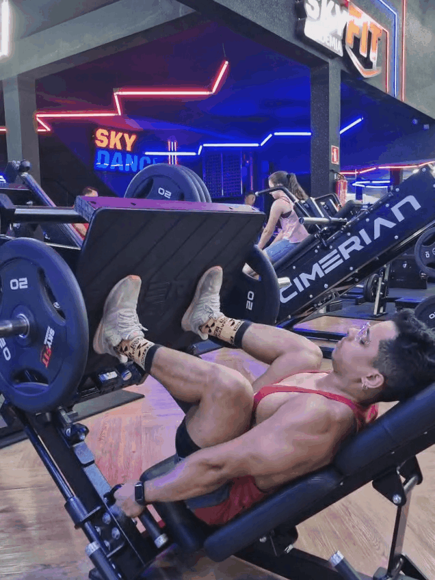
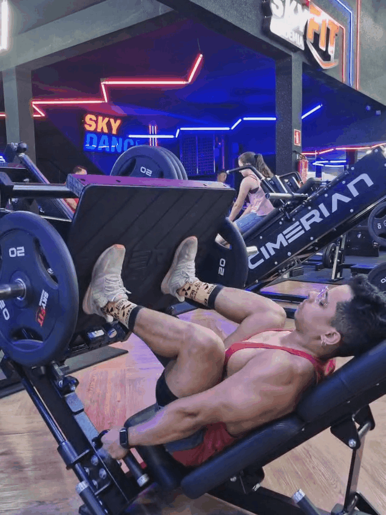
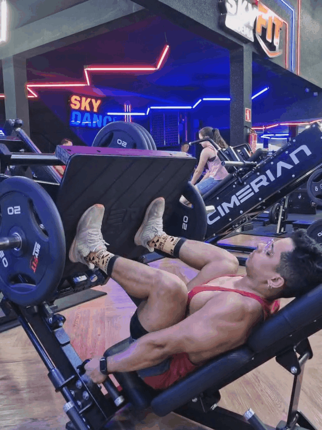

Os glúteos são um poderoso grupo muscular composto principalmente pelo glúteo máximo e médio. O glúteo máximo, o maior músculo do corpo, é o principal extensor do quadril, essencial para movimentos como levantar, correr e saltar. O glúteo médio, localizado na lateral, é vital para a estabilização da pelve. Juntos, eles formam a base da nossa potência e equilíbrio.
